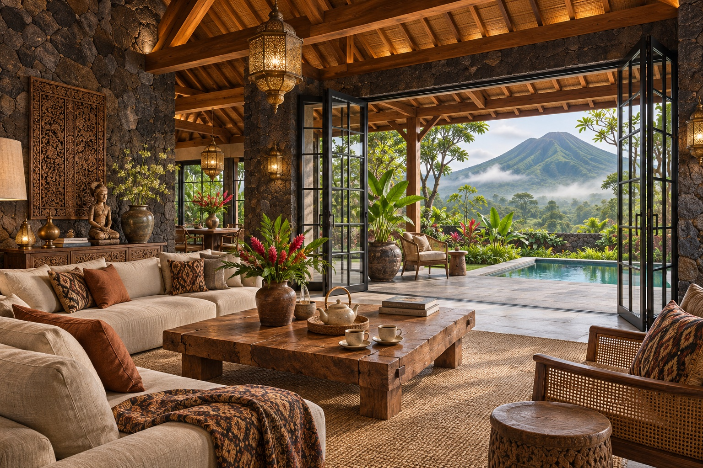

Live / Private residences
A place of your own.
A world around it.
Private cabins, lodges and villas within a destination shaped for mountain living.
Ownership at Mount Paradise
Choose a home.
Find a way of life.
A private garden, a sheltered veranda and a home in stone and timber. Beyond your front door, the Main Lodge, proposed wellness facilities and 800 Club create opportunities for a fuller mountain life.

The private collection
From cabin
to estate.
Explore eight architectural concepts across Mountain Cabins, Retreat, Family, Reserve and Estate categories. Compare garden character, pools and spaces for outdoor entertaining.
Explore the full collection
A consistent design language
Stone. Timber.
A sense of belonging.
Rich volcanic stonework, generous timber structures and comfortable interiors connect every home to the character of Mount Paradise. The final arrangement begins with the individual site.
Inside a private lodgeYour privacy.
A shared destination.
Enjoy a quiet home base with hospitality, gathering spaces and recreation within the wider development. Owner access and membership arrangements will be clearly defined as the offering develops.
Discover the 800 ClubYour next chapter
Let’s talk about your home.
Email the type of home you are considering, your intended use and any questions about ownership.